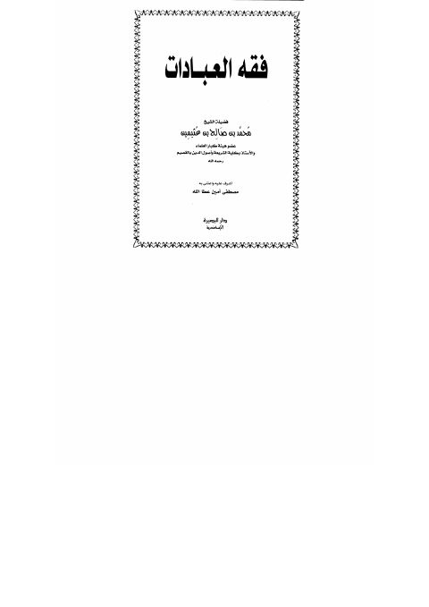

فقه العبادات- عطاالله
Authors: محمد بن صالح العثيمين
Editors: مصطفى أمين عطاالله
Publishers: دار البصيرة
Download Downloads need an internet connection.
- Country
- الإسكندرية، مصر
- Edition
- 2
- Volumes
- 1
- Pages
- 400
- Type
- كتاب
- Category
- الفقه وأصوله
Description
▫️ العنوان: فقه العبادات- عطاالله ▪️ المؤلف: #محمد_بن_صالح_العثيمين ▫️ المحقق: #مصطفى_أمين_عطاالله ▪️ الناشر: #دار_البصيرة ▫️ بلد النشر: الإسكندرية، #مصر ▪️ الطبعة: 2 ▫️ عدد الأجزاء: 1 ▪️ الصفحات: 400 ▫️ نوع الوعاء: #كتاب ▪️ التصنيف الرئيسي: #الفقه_وأصوله ۪